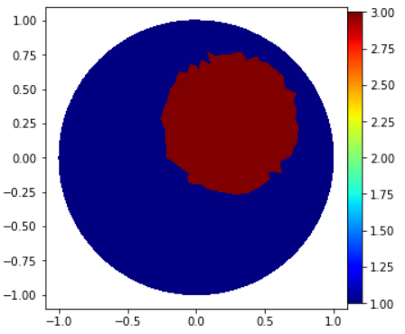

Module 2 - Forward
- module2_forward.current_method(L, l, method=1, value=1)
Create a numpy array (or a list of arrays) that represents the current pattern in the electrodes.
- Parameters:
L (int) – Number of electrodes.
l (int) – Number of measurements.
method (int) – Current pattern. Possible values are 1, 2, 3, or 4 (default=1).
value (int or float) – Current density value (default=1).
- Returns:
list of arrays or numpy array – Return list with current density in each electrode for each measurement.
- Method Values:
1 and -1 in opposite electrodes.
1 and -1 in adjacent electrodes.
1 in one electrode and -1/(L-1) for the rest.
For measurement k, we have: (sin(k*2*pi/16) sin(2*k*2*pi/16) … sin(16*k*2*pi/16)).
- Example:
Create current pattern 1 with 4 measurements and 4 electrodes:
>>> I_all = current_method(L=4, l=4, method=1) >>> print(I_all) [array([ 1., 0., -1., 0.]), array([ 0., 1., 0., -1.]), array([-1., 0., 1., 0.]), array([ 0., -1., 0., 1.])]
Create current pattern 2 with 4 measurements and 4 electrodes:
>>> I_all = current_method(L=4, l=4, method=2) >>> print(I_all) [array([ 1., -1., 0., 0.]), array([ 0., 1., -1., 0.]), array([0., 0., 1., -1.]), array([ 1., 0., 0., -1.])]
- module2_forward.GammaCircle(mesh, in_v, out_v, radius, centerx, centery)
Function to create a circle in the mesh with specified properties.
- Parameters:
mesh (
dolfin.cpp.mesh.Mesh) – Mesh.in_v (float) – Value inside the circle.
out_v (float) – Value outside the circle.
radius (float) – Circle radius.
centerx (float) – Circle center position x.
centery (float) – Circle center position y.
- Returns:
numpy.array – Return a vector where each position corresponds to the value of the function in that element.
- Example:
>>> ValuesCells0 = GammaCircle(mesh=mesh_refined, in_v=3.0, out_v=1.0, radius=0.50, centerx=0.25, centery=0.25) >>> print(ValuesCells0) array([1., 1., 1., ..., 1., 1., 1.]) >>> Q = FunctionSpace(mesh, "DG", 0) #Define Function space with basis Descontinuous Galerkin >>> gamma = Function(Q) >>> gamma.vector()[:]=ValuesCells0 >>> plot_figure(gamma, name="", map="jet");
{kind=link}
- class module2_forward.ForwardProblem(mesh, z)
Object representing the Forward Problem in 2D EIT.
- Parameters:
mesh (
MyMesh()) – Mesh.z (array-like) – Vector of impedances in electrodes.
- Example:
>>> # Basic Definitions >>> L = 16 >>> l = int(L) # Measurements number. >>> z = np.ones(L) * 0.025 # Impedance >>> I_all = current_method(L, l, method=1) # Current pattern
>>> # Solver >>> VD = FiniteElement('CG', mesh_refined.ufl_cell(), 1) # Space Solution >>> DirectProblem = ForwardProblem(mesh_refined, z) >>> list_u0, list_U0 = DirectProblem.solve_forward(VD, gamma0, I_all) >>> list_U0 = DirectProblem.sol_asarray() >>> print(list_U0[0:L]) [1.0842557 0.32826713 0.19591977 0.13158264 0.06214628 -0.03412964 -0.17331413 -0.40308837 -1.18449889 -0.42369776 -0.21120216 -0.08218106 0.01735219 0.10789938 0.20976791 0.37492101]
- solve_forward(V, I_all, gamma)
Solver for the Forward Problem of 2D Electrical Impedance Tomography (EIT).
- Parameters:
V (
dolfin.cpp.fem.FiniteElement) – FiniteElement FEniCS object.gamma (
dolfin.function.Function) – Finite Element Function representing the electrical conductivity distribution.I_all (
current_method()or list of arrays) – Current density in each electrode for each measurement.
- Returns:
tuple – A tuple containing two FEniCS objects, representing the potential distribution in the domain and the potentials at the electrodes, respectively.
- Example:
>>> DirectProblem = ForwardProblem(mesh_refined, z) >>> list_u0, list_U0 = DirectProblem.solve_forward(VD, I_all, gamma0)
- sol_asarray()
Convert electrode potential results into an array and concatenate them.
- Returns:
array – A vector with concatenated potential values for all electrodes and measurements.
- Example:
>>> list_U0 = DirectProblem.sol_asarray()
- add_noise(noise_level=0, noise_type='uniform', seed=42)
Add noise to the potential values.
- Parameters:
noise_level (float) – Noise level in percentage (between 0 and 1).
noise_type (str.) – Type of noise to add (‘uniform’ or ‘cauchy’).
seed (int) – Seed for the random number generator.
- Returns:
array – A vector with noised potential values for all electrodes and measurements.
- Example:
>>> list_U0_noised = DirectProblem.add_noise(noise_level=0.01, noise_type='uniform')
- verify_solution_graphs(gamma0, sol_index=0, method=1)
Plot boundary information to verify the solution.
- Parameters:
gamma0 (
dolfin.function.Function) – Finite Element Function representing the electrical conductivity distribution.sol_index (int) – Index for the solution, ranging from 0 to l (number of measurements).
method (int) – Method for verification. 1: u+zi.gama.n.grad(u)=Ui, 2: boundary gamma.n.grad(u), 3: boundary gamma.n.grad(u) (only gaps).
- Returns:
array – Plot boundary data.
- Example:
>>> data = DirectProblem.verify_solution_graphs(gamma0, sol_index=0, method=2)
- verify_solution_values(I_all, gamma0, sol_index=0, method=1)
Verify the solution values by comparing with the expected values.
- Parameters:
I_all (array or list of arrays) – Current density in each electrode for each measurement.
gamma0 (
dolfin.function.Function) – Finite Element Function representing the electrical conductivity distribution.sol_index (int) – Index for the solution, ranging from 0 to l (number of measurements).
method (int) – Method for verification. 1: Current values, 2: Average potential on electrodes.
- Returns:
None
- Example:
>>> DirectProblem.verify_solution_values(I_all, gamma0, sol_index=0, method=2)